LA-156 Wing skin
Design of an LA-156 Wing skin.
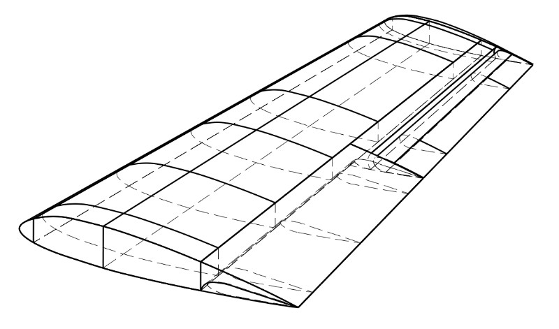
Title
- Introduction
- Work scheme
- Input data
- Parametrize Master-Geometry
- Calculating
- Modeling
- FEM calculation
- Technology and manufacturing
- Conclusion
- Tech-documentation
Introduction
The aim of this work was a design of covering for the wing LA-156, as a part of acomplex teamwork. The operation loads of the skin panels were calculated based on the rationing loads of the wing. The structure of covering was designed in various type, qualitative analysis and selected final version of sandwich panel were calculated. A shear stresses of compounds were calculated and verification of a calculation by finite element method was conducted. The second section is devoted to the manufacturing of top panel, considered as the most typical. Finally, the price of the panel and cost manufacturing process were calculated. In addition, a complete set of design documentation was developed.
Work scheme
Проектні та конструкторські роботи були розбиті наступним чином:
- Нормування навантажень на крило
- Проектування поздовжнього силового набору
- Проектування поперечного силового набору
- Проектування обшивки крила
- Проектування елементів механізації
Дана випускна робота містить результати проектування обшивки крила із композиційних матеріалів (КМ). Була розроблена схема компонування крила і
параметризованна майстер-геометрія крила. Були розроблені параметри обшивки, обранні та обґрунтовані конструктивно-технологічні рішення (далі КТР) панелі, розроблені схеми з’єднань обшивки з поздовжнім і поперечним силовими наборами. Для верхньої панелі обшивки крила був розроблений технологічний процес виготовлення; визначено вагові, а також конструктивні, технологічні й економічні переваги виготовлення обшивки з КМ.
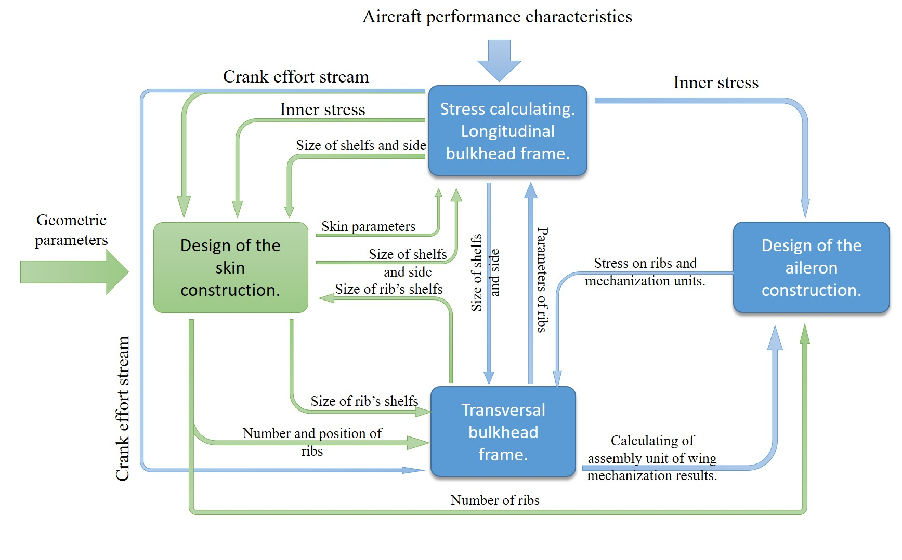
Input data
Початковими даними для роботи слугують геометричні параметри крила і внутрішні силові фактори, визначені на етапі нормування навантажень на крило.
Характер навантаження панелей обшивки крила літального апарату наступний: на обшивку з боку навколишнього середовища діють тільки аеродинамічні сили – підйомна сила і сила опору повітря. Розподілене зовнішнє навантаження перетворюється у вигляді системи нормальних і дотичних напружень. Звідси випливає, що на панелі обшивки діють зусилля в її площині і розподілений по поверхні тиск.
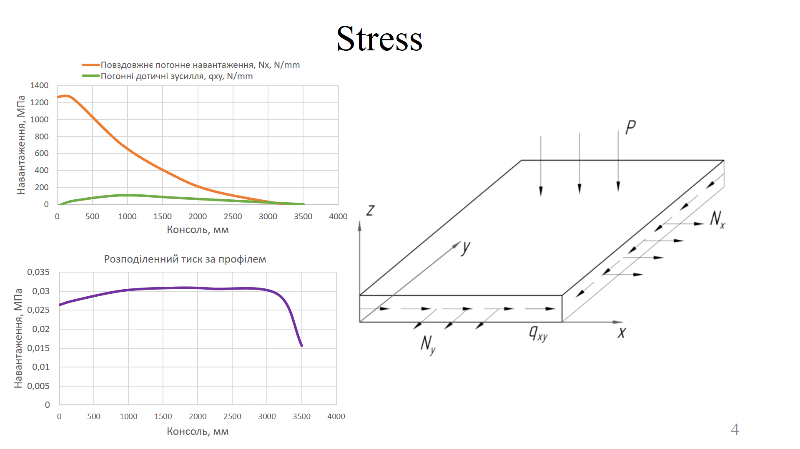
Parametrize Master-Geometry
Задля варіації геометричних параметрів була розроблена параметризована мейстер-геометрія в программному комплексі CATIA V. Усі початкові розміри а також кількість лонжеронів та нервюр, та навіть профіль в моделі задавалися параметрично із excel файлів. Була розроблена программа розрахунку геометричних показників профілю крила літака типу 4-цифрового NACA. Знайти можно тут. 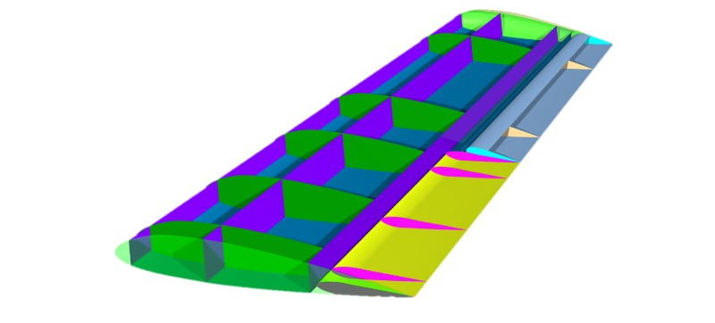
Calculating
Для шарнірно опертих пластин з симетричною структурою зусилля N x , N y і q y не викликають вигину, а поперечний тиск p - мембранних напружень. Як ортотропія, так і симетрія укладання шарів по товщині цілком виправдані, так як в цьому випадку при силовому і температурному навантаженні в панелі не виникають небажані деформації і напруги, пов’язані, наприклад, з коефіцієнтами взаємного впливу, коли нормальні напруження викликають зсувні деформації, а якщо ці зсувні деформації обмежені каркасом, то з’являються додаткові дотичні напруження. Неврівноваженість структури по товщині (несиметричність пакету шарів) при зміні температури призводить до появи температурних моментів (згинального і крутного), що викликають короблення панелі.
Після багатьох ітерацій геометричні параметри конструктивно-силових елементів задані наступними.

Pressure type allocation
Слід зауважити, що діючі розподілені нормальні і дотичні навантаження вздовж площини панелі визначалися для двох розрахункових випадків (далі РС), а тиск – для трьох, останній пов’язаний із зміненою розрахункової схемою – тиск редставляється розподіленим за профілем рівномірно. Схеми [4] розподілу тиску за профілем крила показано на рисунку.
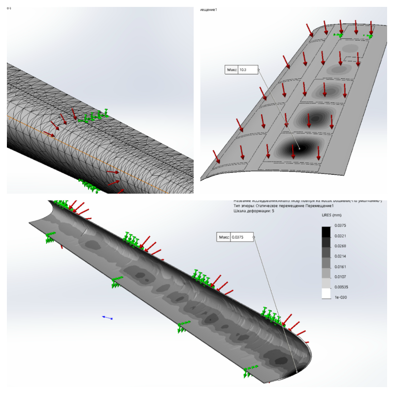
Figurativly parts
Перш ніж приступати до проектування параметрів обшивки крила її необхідно розбити на умовні ділянки, в межах яких властивості обшивки залишаються незмінними. Розрахунок та визначення проектних параметрів буде вестися на цих ділянках розрахункової схемою шаруватих пластин. При виборі таких ділянок необхідно орієнтуватися на технологію виготовлення обшивки, і на розташування нервюр - опор панелей, в межах яких вона не повинна втрачати стійкість. 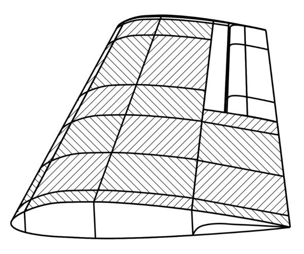
Adhesive connection
 У даній роботі був обраний поверхневий метод з’єднання. Для того є кілька причин. По-перше, обшивка доволі тонка, та встановлювати металеві кріпильні елементи можливо або з місцевим порушенням аеродинамічної контуру, або потрібно збільшувати товщину панелей в місцях з’єднання задля установки кріпильних елементів з потайною головкою. По-друге, потоки дотичних зусиль, що були розраховані та приведені у додатку А не дуже великі. По-третє, оскільки матеріали силових наборів схожі з матеріалом обшивки (вугле волокно HEXLPY IM6 для повздовжнього набору та така сама вуглетканина для нервюр) то адгезивні характеристики клейового з’єднання будуть максимальними. І, останнє, механічне з’єднання із полками лонжерону буде являти собою великі концентратори напруги, та ведуть за собою необхідність посилювати полки лонжерону, та в цьому випадку вагова ефективність від виготовлення композитного лонжерону може бути нівельована необхідністю його посилення.
У даній роботі був обраний поверхневий метод з’єднання. Для того є кілька причин. По-перше, обшивка доволі тонка, та встановлювати металеві кріпильні елементи можливо або з місцевим порушенням аеродинамічної контуру, або потрібно збільшувати товщину панелей в місцях з’єднання задля установки кріпильних елементів з потайною головкою. По-друге, потоки дотичних зусиль, що були розраховані та приведені у додатку А не дуже великі. По-третє, оскільки матеріали силових наборів схожі з матеріалом обшивки (вугле волокно HEXLPY IM6 для повздовжнього набору та така сама вуглетканина для нервюр) то адгезивні характеристики клейового з’єднання будуть максимальними. І, останнє, механічне з’єднання із полками лонжерону буде являти собою великі концентратори напруги, та ведуть за собою необхідність посилювати полки лонжерону, та в цьому випадку вагова ефективність від виготовлення композитного лонжерону може бути нівельована необхідністю його посилення.
Skin types comprasion
Треба мати на увазі, що вибирати тип обшивки зважаючи лише на її вагову ефективність – безглуздо, тому як треба вважати її подальшу технологію виготовлення, умови (якщо вони є) та обладнання виробництва, методику з’єднання панелей між один одним та силовими елементами крила, коли як гладку панель найпростіше з’єднати з іншими елементами будь-яким методом з’єднання, а стрингерну із z-образним профілем стрингера – ні.

Треба розуміти, що із даним розплодженням повздовжніх елементів носок крила має бути або гладким, або зі стрингером. Із технологічних зображень (дуже вузький поперечний переріз) також гладкою має бути частина над щитком. Як видно із результатів дослідження, найбільш ефективними є панелі із аповнювачем.
Однак їх характеристики змінюються між кожною умовною ділянкою, що веде за собою ускладнення процесу виготовлення такої панелі. І якщо кількість шарів композиту при викладці контролювати доволі просто, то пінопласт необхідно замовляти згідно із розрахунками.
Modeling
Для доступу до елементів механізації передвачено оглядове вікно. Моделювання велося в програмному комплексі CATIA V5.
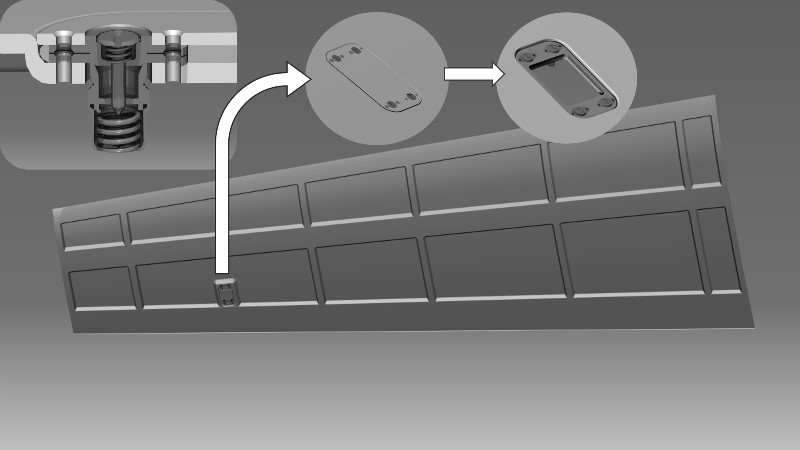
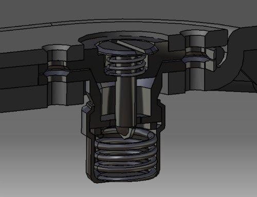
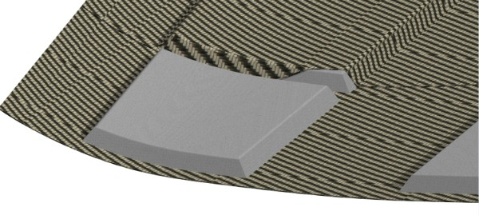
FEM calculation
Після визначення геометричних параметрів обшивки можна за методикою тонкостінного стрижня розрахувати точні потоки дотичних зусиль.
Також, в якості ще одного перевірочного розрахунку треба провести розрахунок методом скінченних елементів (далі МСЕ). Розрахунок буде вестися по розподіленому тиску для носка крила та для верхньої панелі цілком. Закріплення жорстке в місцях з’єднань.
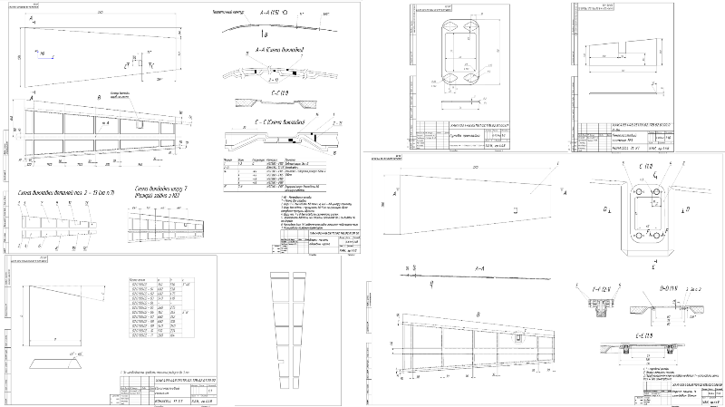
Technology and manufacturing
Так як обшивка літака збірна - вона складається з декількох частин. Найбільш навантаженими з них - як можна дізнатися с попередньої частини - є верхня анель, нижня, обтічник, носок та задня - частина зверху над щитком. Частина, що безпосередньо розташована над щитком, але знаходиться усередині крила - навантаженням не підлягала - вона потрібна тільки для замикання контуру крила. З цих самих зображень, частини, що замикають контур крила в частині з елероном також не проектувалися. З технологічних зображень їх товщина буде 2 моношару, або 0,84 мм. А виготовлені вони, а також інші гладкі панелі - носок, обтічник та задня верхня - методом викладки препрегу тканини на негативні оснастки з подальшим вакуумним формуванням в автоклаві.
Технологічність конструкції наступна:
- Верхня панель обшивки крила являє собою панель с заповнювачем
- Заповнювач пінопластовий марки ROHACELL® 71 XT
- Шари композиту виготовлені з препрегу фірми HEXEL, який складається з вуглетканини W3T282 та епоксидного сполучного F155
- Панель має високу якість зовнішньої аеродинамічної поверхні
- Для виготовленнях панелі потрібно використати 18 погонних метри препрегу та 2 пластини 2500х1250 мм 2 пінопласту.
- Метод виготовлення не дозволяє виготовляти декілька деталей одночасно, але при великих масштабах виробництва є можливість формування до двох таких панелей одночасно при умові формоутворення їх на різних оснастках
- Оскільки ПДЗ повинні переходити безпосередньою з обшивки до силових наборів - то в місці з’єднання не повинно бути заповнювача, тому верхня та нижня панелі будуть мати комірчасту (далі сегментну) структуру
- Внутрішня частина обшивки з’єднується з повздовжнім та поперечним силовим наборами, тому в місцях з’єднання має підвищенні вимоги до стану поверхні
- Для з’єднання із НС пінопласту було використано плівковий клей гарячого твердіння Redux 312
- Після виготовлення панелей крила і до фінальної збірки крила може пройти деякий час, та підготовлені до клейового з’єднання поверхні можуть буди пошкоджені. Тому для запобігання цього на них було нанесено ґрунтове покриття Redux 100 series.
- Панель має оглядовий отвір, що служить також для обслуговування при експлуатації. У даній роботі не буде наведено чіткого алгоритму його збірки та установки.
Segments lining
Через те, що панель має доволі складно форму, розкрій виконано за допомогою лазерного проектору LAP Laser COMPOSITE PRO на координатному столі Eastman M9000 з використанням віброножиць EC-Cutter. Щоб зробити схему розкрою, було використано систему автоматизованого проектування CATIA V5. Нижні шари препрегу - що утворюють аеродинамічний контур - викладаються одним шматком тканини. Верхні шари викладаються з 10 одиниць поздовжньо розташованих частин препрегу (для кожного шару). Плівковий клей розкроювати згідно до креслень пінопластових сегментів із припусками на бокові грані пінопласту, або електронною схемою позиціювання сегментів.
На малюнку нижче схематично зображені сегменти вуглетканини.
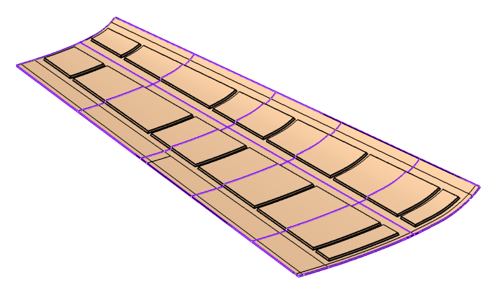
Завдяки великим кутам деформації препрегу вуглетканини маємо змогу викласти сегмент із оглядовим вікном майже без деформацій. Розкрій виконано в системі CATIA V5 модулі Composite design, жовтим кольором позначено зони із кутами деформації тканини понад 30°.
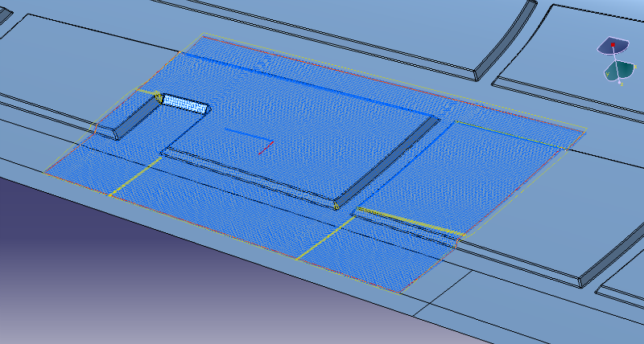
Modling frame
Оскільки зовнішня поверхня має аеродинамічний контур викладати панель необхідно тільки на негативну оснастку. Стисло технологію виготовлення оснастки описано далі.
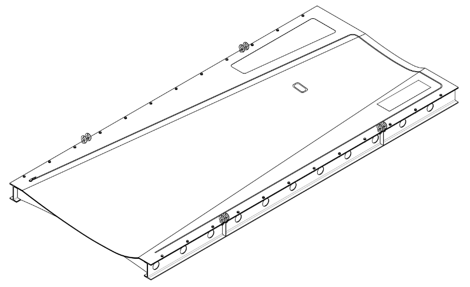
Оскільки панель має доволі велику кривизну - різниця між найвищою та найнижчою точками в площині, перпендикулярної панелі складає 78 мм. У зв’язку з цим, оснастка повинна бути виготовленою згинанням із цільного листу сталі товщиною 8,5 мм. Так як виготовлення пресу для штампа листа завдовжки майже 4 метри – дуже дороге задоволення, лист попередньо згинають до повторення теоретичного контуру із допуском в 5 мм, а потім зточують не фрезерному верстаті. Із шматків зварювати лист неможна, бо сварні шви будуть концентраторами нерівномірності теплового потоку прі нагріванні, а також при зварюванні можливе вигинання та короблення панелі. Оскільки важить такий лист більше 100 кілограм, його установлюють на зварну раму із рейками.
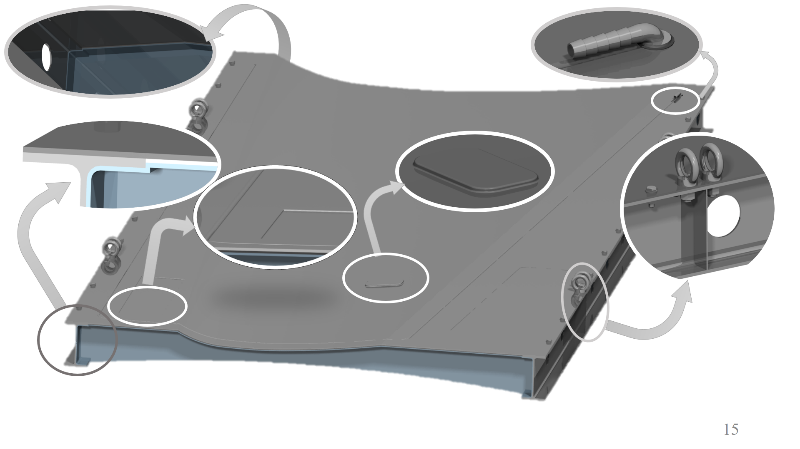
При підготовки оснастки к подальшому формоутворенню її необхідно зафіксувати, відчистити резиновим шпателем від залишків попереднього використання, промити водою, висушити, після знежирити нефрасом, потім розчинником за допомогою бавовняних серветок. Після цього оснастка має бути готовою для подальшого використання.
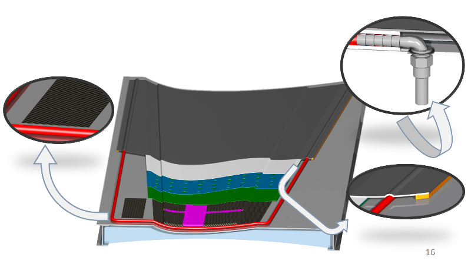
Викладку проводити на оснастку з нанесеним заздалегідь розділовим шаром. Оскільки використовується препрег, потрібно тільки викласти його на оснастку. Під час здійснення викладки необхідно забезпечити рівномірне розташування стиків різних по всій поверхні деталі для запобігання виникненню бугорів після формування.
Викладка проводиться за наступним чином. На оснастку, на яку заздалегідь нанесли антіадгезійний шар, треба викласти 2 повздовжніх шару тканини. Щільність викладки забезпечити за допомогою прокатних роликів. Після здійснення викладки та ущільнення візуально перевірити чи не змістились шари відносно оснастки. Включити лазерний проектор для допомоги в позиціюванні пінопластових сегментів. На місця викладки пінопласту викласти попередньо розкроєні шматки плівкового клею, після цього відокремити захисну плівку. Вкласти сегменти пінопластових пластин. Проконтролювати їх розташування відносно ліній проектору. Викласти другий шар плівкового клею.
Після можна приступати до викладки інших двох шарив вуглетканини, ущільнити їх та перевірити на зміщення. Припуски на механічну обробку (далі - механообробка) залишити відповідно до креслень.
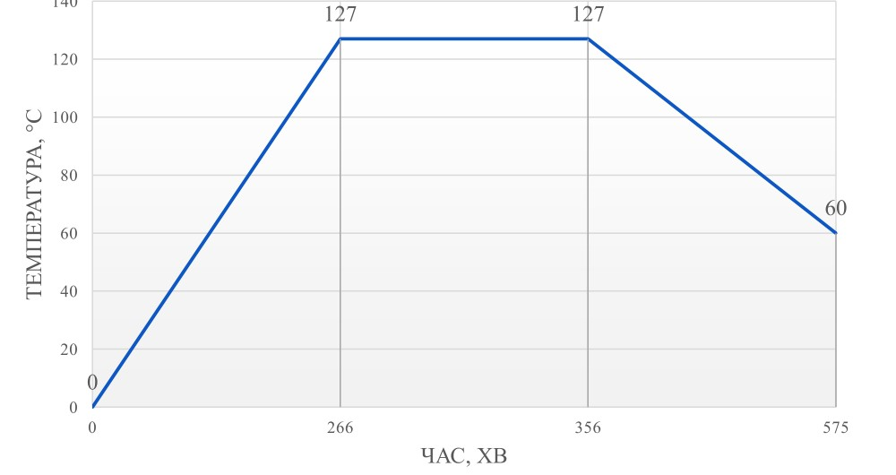
Оскільки панелі обшивки крила є дуже відповідальними деталями, до дотримання теоретичного контуру яких накладаються дуже суворі вимоги, формування проводиться під тиском в автоклаві.
Згідно з рекомендаціями виробника максимальна температура формування потрібна бути не більш 127° для препрегу. Та тиск формування від 310 до 103 кПа. Час формування варіюється згідно з швидкістю нагрівання та охолодження. Нагрівати необхідно зі швидкістю від 1 до 4 °С/хв, а охолоджувати – максимум 3°С/хв. Цикл формування приведений на діаграмі 3.7. Остаточний тиск, що необхідно забезпечити автоклавом – 3 атмосфери.
Materials and equipment list
Нижче у незв’язаної таблиці двома колонками будуть приведені списки використаних матеріалів (у тому числі допоміжних) та обладнання.
| Equipment | Model | Material | Model |
|---|---|---|---|
| Autoclave | Econoclave EC6x20 | Prepreg | HEXCEL HEXPLY W3T282 / F155 |
| Vacum pump | Value v-I 260SV | Rigid foam | ROHACELL 71 XT |
| Coordinate table | Eastman M9000 | Adhesive fil m | HEXCEL Redux 312 |
| Workbanch expanded foam cutting | CPД “СКАТ” | Separation layer | Lusin Alro LL 301 |
| Lazer projecting | LAP Laser Copmosite PRO | Vacuum film | Fiber Glast 1782-A |
| Vibrocut | EC-Cutter | Vacuum pupe | Spiral pupe 10⁄12 |
| Angle grinder | Proxxon WP/E | Germetic strip | ГерЛен УТ/3-13 |
| Graver | Proxxon LWB 220/E | Perforated fabric | Fiber Glast 1540-А |
| Acustic crack detector | ИД-91М | Sacrificial layer | Лавсан |
| Acustic leak detector | ТИАМ-3 | Priming layer | Resux 100 series |
| thermal imager | Testo 882 | Consumables | De-icing agent, napkins, sandpaper |
.
Conclusion
У даній роботі була сконструйована обшивка крила літака ЛА-156. Були визначені діючи на панелі обшивки навантаження за декількома розрахунковими моделями та для декількох розрахункових випадків. Розроблена конструкція силової схеми панелей крила та спроектовані параметри панелей. Після чого для верхньої, як для найбільш складної панелі, був розроблений технологічний процес виготовлення, та розрахована повна її собівартість.
Була розроблена конструкція силових елементів та обрана модель з’єднання панелей із силовими наборами. Проведені розрахунку щодо визначення КТР панелей, такі як їх тип, наявність допоміжних ліній опору, конструкція ’єднань. Після проектування по даним потокам дотичних зусиль був проведений перевірочний розрахунок, також був проведений розрахунок методом скінчених елементів. Остаточні параметри панелей такі:
- 4 шару композиту, або 1,68 мм для верхньої та нижньої панелей
- 6 шарів, або 2,52 мм для задньої панелі
- 8 шарів, або 3,36 мм для носку
- 15 мм пінопластового заповнювача
- Клейовий метод з’єднання обшивки із заплечиком
В третьому розділі був описаний технологічний процес виготовлення верхньої панелі обшивки крила літака ЛА-156. При виготовлені панелі було задіяно велику кількість обладнання, та 2 робочих, хоча прагнення якнайбільш здешевити процес і було одним з основних, за винятком забезпечення належної якості, критеріїв при розробці даного те процесу. Але при виготовлені одночасно всіх панелей крила, інших елементів конструкції, та при умові, що деталь є серійною продукцією - трати стають пропорційними. Також техпроцес розроблявся з урахуванням використаного обладнання для виготовлення інших елементів конструкції крила, таких як лонжерон, стінки, нервюри, щиток та елерон. При виготовлені панелі КВМ становив 58%, необхідна площа тканини – 18 погонних метри, пінопласту – 2 пластини, 17 погонних метри плівкового клею. Час виготовлення всієї панелі складає 1005 хв. А повна собівартість панелі оставила 314 тис грн.

Tech-documentation
Також був розроблен повний пакет технічної документації. Знайти можна за цією адресою.
 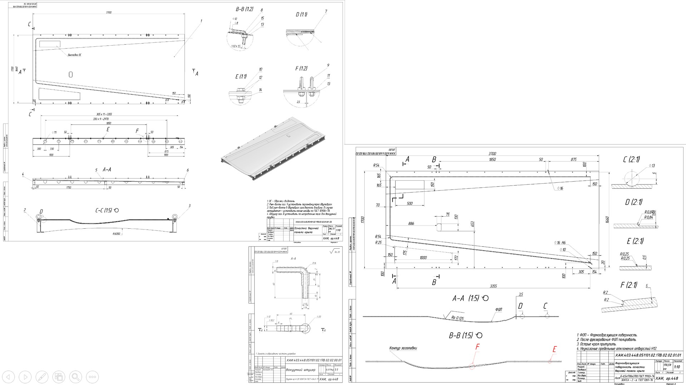
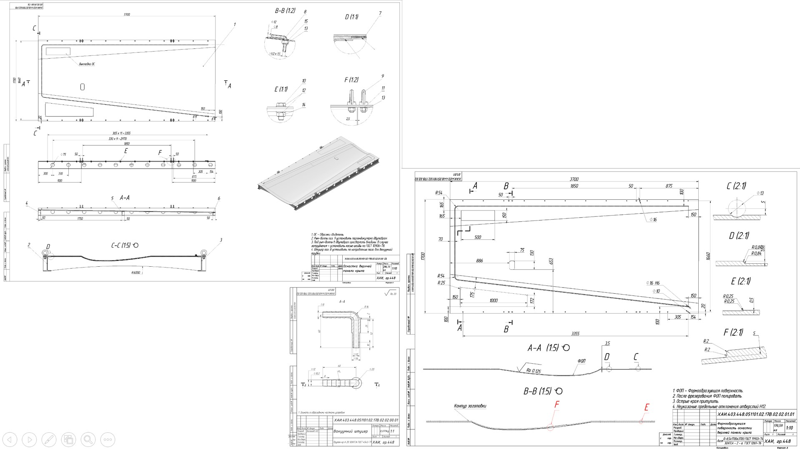